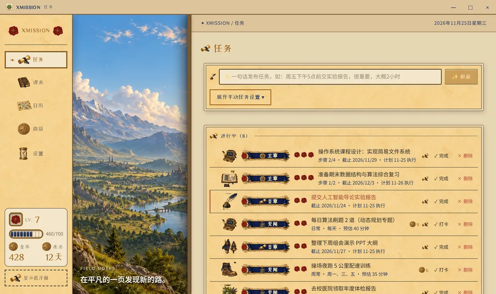
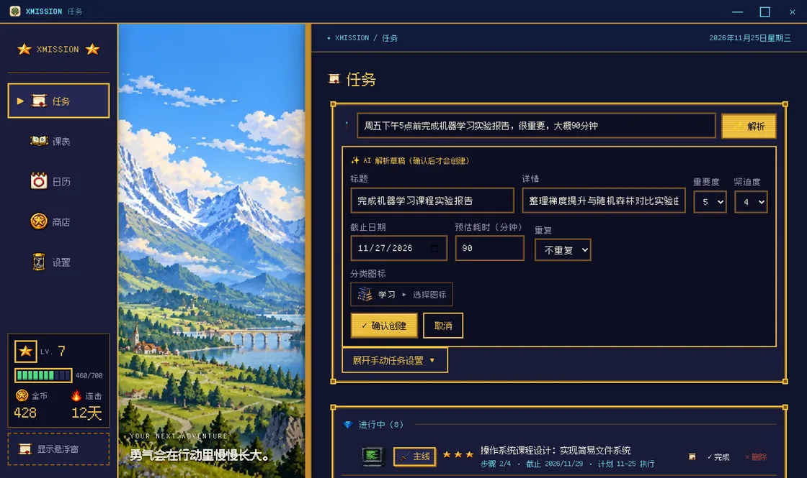

01 / ALWAYS IN SIGHT
三窗口常驻
把日程留在视线余光，而不是埋进标签页
写文档、查论文或写代码时，透明置顶悬浮任务栏安静停靠屏幕边缘，支持调节透明度、靠边自动隐藏或一键收起为 43×43 圆形悬浮球；无需频繁切屏即可勾选进度与掌控番茄钟。
XMISSION OFFICE EDITION · STUDY & WORK DESKTOP SUITE
为深度研学与日常办公打造的本地桌面工作台。以轻盈半透明悬浮层常驻屏幕一隅，将待办优先级、课程与会议排期、AI 参谋及沉浸番茄钟凝练于一方静谧空间——不喧哗、不打断、每一步都有正向回馈。
Real Desktop Experience

Design Philosophy
剥离冗余社交与噪音弹窗，只保留真正提升推进感的四项核心设计原则。
写文档、查论文或写代码时，透明置顶悬浮任务栏安静停靠屏幕边缘，支持调节透明度、靠边自动隐藏或一键收起为 43×43 圆形悬浮球；无需频繁切屏即可勾选进度与掌控番茄钟。
导入课程或固定会议后，内置规则引擎自动测算当日 08:00–22:00 的剩余连续空档，综合逾期状态、今日日常、AI 计划日与估时契合度动态排序，消除“面对清单却不知从何下手”的决策消耗。
主界面风景侧栏可随时调节宽度；向右拖过 2/3 即可展开全屏沉浸专注番茄钟。无多余边框干扰，支持 1–180 分钟灵活定时，意外关闭或重启时自动冻结剩余秒数，保护每一次心流。
完成任务、子步骤与专注计时自动累计透明账本积分，可用于兑换你为自己设定的咖啡、午休或周末奖励。专为熬夜研学与加班设计的凌晨 4:00 任务日分界，深夜收尾也不误断连击。
AI Copilot · Draft First
兼容所有 OpenAI API 协议服务商，自带密钥按需触发。AI 输出永远先落入可编辑草稿，把最终决定权留给你。

实机截图 · AI 一句话解析草稿确认卡，所有字段支持二次微调
Calm Visual Atmosphere
24 张压缩 WebP 风景按电脑本地时间切换六个光影时段，窗口收起至托盘时自动暂停粒子与天气轮询，既赏心悦目又极致省电。
下班或晚自习结束时，一键生成结构化 Markdown 今日日报（已完成、待继续、番茄钟数与积分统计），并支持全表一致性 JSON 本地备份。
无需注册账号、不向第三方上传日程；AI 密钥保存在操作系统原生凭据库，外部接口强制 HTTPS 并禁用重定向，保障学习与工作资料安全。
Rust 后端采用 SQLite 写事务与幂等流水账本，前端富文本备注全链路 DOMPurify 净化配合严格 CSP，轻量稳定、长驻不卡顿。
XMISSION OFFICE · v0.67.0
支持 Windows 10/11 x64 与 macOS 11+ Universal（Apple 芯片 / Intel）。遵循 PolyForm Noncommercial License 1.0.0 许可，源码公开可审阅。